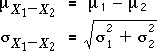

Difference between two variables
If X1 has mean µ1 and standard deviation σ1, and X2 has mean µ2 and standard deviation σ2, then the mean and standard deviation of the difference, X1 - X2, are

This is not a typo. The variance of X1 - X2 is the sum of the variances of X1 and X2.
Requirement of independence
The above formula for the standard deviation is only true if X1 and X2 are independent of one another. If high values of X1 tend to be associated with high values of X2 (i.e. they are positively correlated), then the standard deviation of their difference is less than the formula gives.
The distributions of the sum and difference of two normally distributed variables are now displayed graphically. A simulation supports them.
Heights of husband-and-wife pairs
The video below illustrates these distributions in the context of the heights of a married couple.
The distance between the top of the woman's head and a fixed location (the ground or door frame) has lower spread than the distance to a variable location (the top of the man's head).